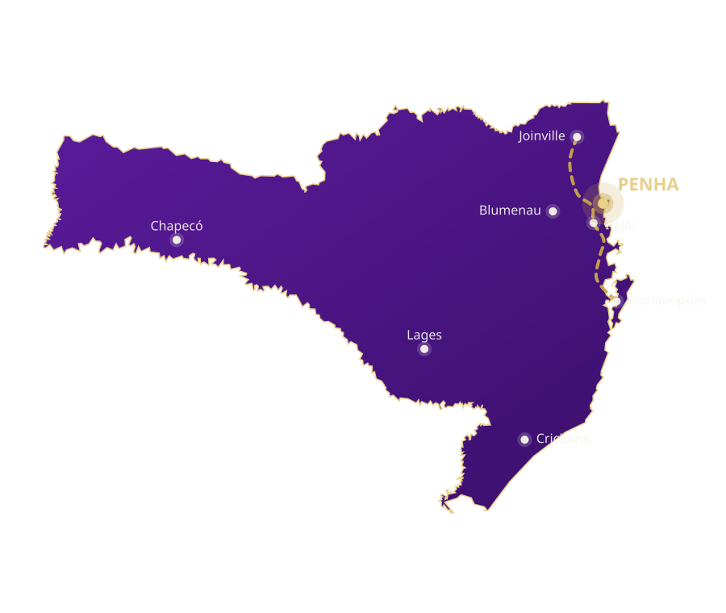
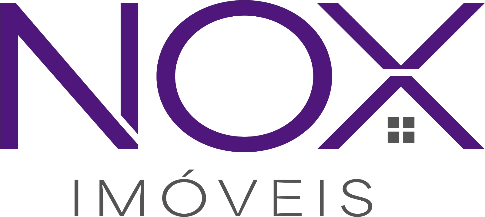
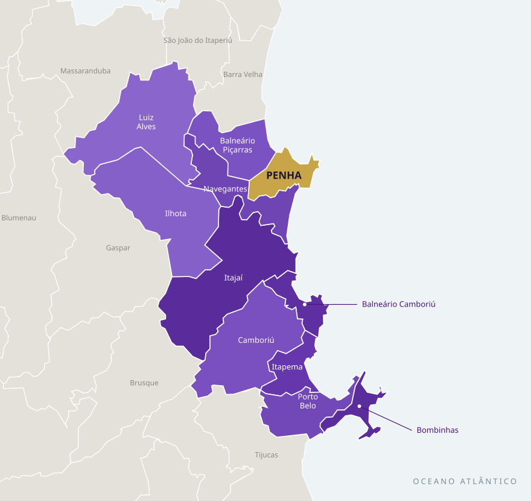
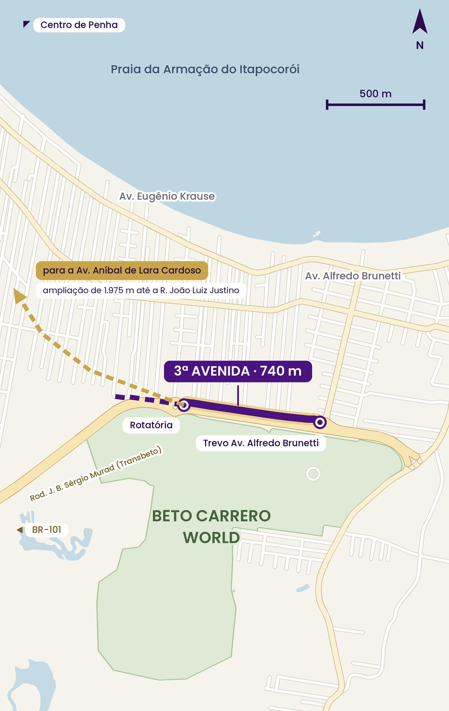
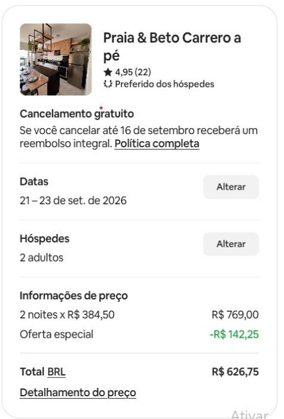
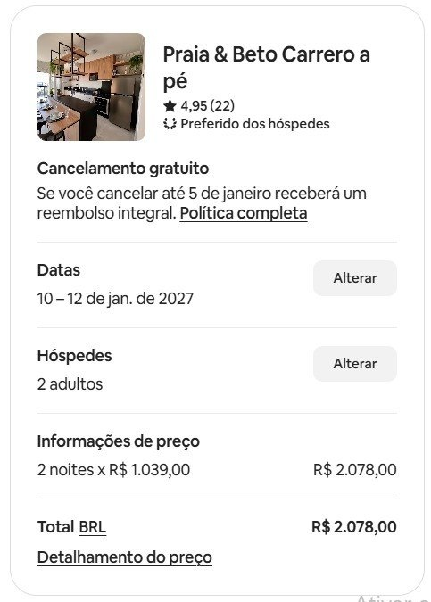

O estado que o Brasil está escolhendo para morar, empreender e investir.
145 km ligando Joinville a Florianópolis por dentro do litoral, com 6 pistas e projeto para 120 km/h. Joinville–Floripa cai de 3h para cerca de 1h15 — e Penha fica no meio do caminho.


11 municípios da Foz do Rio Itajaí unidos em uma estratégia integrada de desenvolvimento — porto, aeroporto, turismo e indústria no mesmo raio de 60 km.

Uma localização estratégica: perto de tudo, no caminho de todos.
Penha recebe o fluxo de quem chega do Paraná e de São Paulo — e fica a 14 km do aeroporto de Navegantes.
Joinville, Blumenau, Itajaí e Balneário Camboriú a menos de uma hora: emprego, saúde, universidade e serviços.
25 praias (4 com Bandeira Azul), morros, trilhas e o pôr do sol mais fotografado de Santa Catarina.
O maior parque temático da América Latina fica aqui — e traz milhões de visitantes todos os anos.

O parque temático mais visitado da América Latina quer dobrar de tamanho até o fim da década — com novas áreas, hotéis e a montanha-russa mais cara do Hemisfério Sul.
Megaloja com o primeiro cinema da cidade, gastronomia e entretenimento, às margens da SC-414, junto à BR-101. Obras previstas para começar em 2027.
Primeira unidade da rede em Penha, com drive-thru, ao lado do Fort Atacadista e de frente para o parque. Inauguração prevista para outubro, antes do verão.
2,3 km de calçadão, ciclofaixa e áreas verdes ligando a Praia do Quilombo à Praia de Armação — e o projeto completo chega a 6 km, até a Praia do Cascalho.
25 passarelas de acesso à praia, praças, playgrounds e iluminação: a beira-mar vira o lugar de convivência da cidade.
Caminhar e pedalar de uma praia à outra. É o tipo de obra que faz o turista ficar mais dias.
Onde a orla foi requalificada no litoral catarinense, o m² ao redor foi junto.
740 metros de via nova em frente ao Beto Carrero World, do trevo Alfredo Brunetti até a rotatória seguinte, no sentido BR-101 — com ciclofaixa e iluminação.
Um corredor paralelo à avenida principal para quem chega do parque e da BR-101.
A ampliação de 1.975 m da Aníbal fecha o pacote: R$ 10,2 milhões em obras viárias na região central.
A nova malha viária passa exatamente na região do bairro planejado.

O escritório do urbanista que transformou Curitiba em referência mundial está redesenhando o futuro de Penha — o mesmo time que assinou o masterplan de Balneário Camboriú.
O masterplan é o primeiro passo para atualizar o Plano Diretor, desatualizado desde 2017 — regras claras de onde e como a cidade cresce.
Cidade planejada é cidade previsível: zoneamento, mobilidade e infraestrutura definidos antes do crescimento acontecer.
O Ayra nasce no momento em que Penha ganha o seu desenho de longo prazo.
O mesmo apartamento de 2 quartos, a pé da praia e do Beto Carrero — anúncio real, nota 4,95 e selo "Preferido dos hóspedes".


Fundada em 2008, a Santer consolidou sua presença com empreendimentos de qualidade construtiva, localização estratégica e valorização — e hoje é uma das construtoras que mais lançam em Penha.
Lançamento em Penha, a 150 m do Beto Carrero, em outubro de 2024. O recorde virou matéria na Forbes Brasil — mais do que velocidade de vendas, é a prova de confiança do mercado em um produto bem localizado e bem executado.
Lavitta Residences Beach and Park, Penha — o padrão Santer que você pode visitar hoje, antes de conhecer o próximo projeto.
Um bairro planejado da Santer no ponto mais estratégico de Penha — onde o fluxo do parque encontra o caminho da praia.
de terreno — escala de bairro, não de condomínio.
a facilidade de ter tudo no entorno, desde o primeiro dia.
da cidade: entre o Beto Carrero World e a praia.
da cidade no entorno do empreendimento.
É na convenção que o Ayra é apresentado por completo: o projeto, as imagens, as condições e o calendário de vendas. Quem estiver lá sai na frente.
Nos vemos na convenção de lançamento — 01 de outubro de 2026.